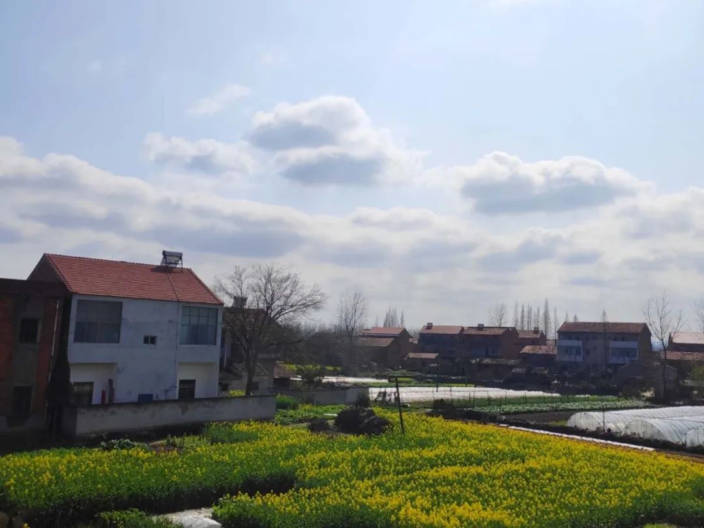
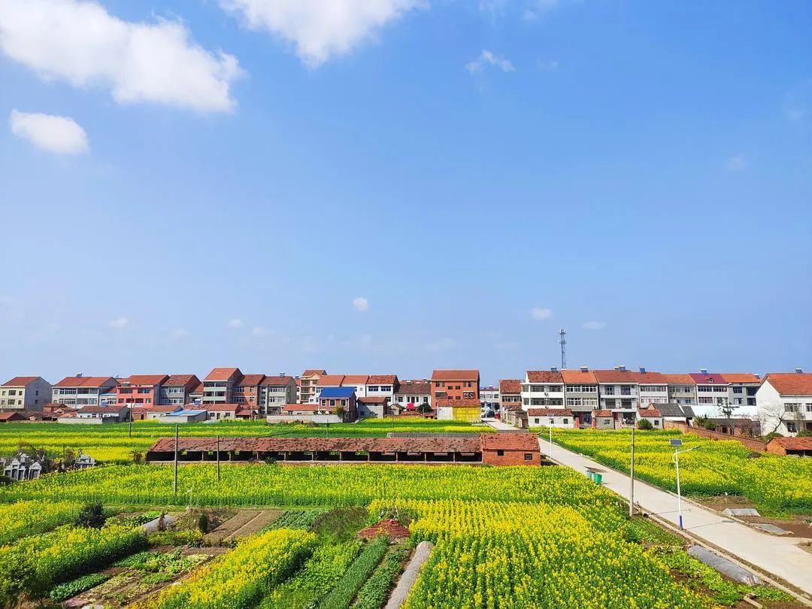

明天你想吃什么
原文链接 备份链接 每天到晚上六点左右，就会听到母亲在楼下喊：“庆儿，我好咯！”我立马回道：“晓得咯，我马上就来！”合上电脑，换上鞋子，戴口罩，拿手机，火速地跑下楼去。母亲就等在楼梯口。 从堂屋穿过时，在前厢房看新闻的父亲转头问：“又要到 …

五年前我曾经写过一段话：
“昨天睡觉时听到雨声，心里竟有些激动。很久没有听到了，北京这样干燥的天气日复一日，想它来一场雨是多么难。
半夜醒来一次，像是一个小孩子怕喜欢的人趁着自己睡着时悄悄走掉，雨声还在，便又安心地睡了。
清晨起来，走到院子里，路面有小水洼，连翘花也凋谢了些，空气是湿润的。有点儿像在南方家乡了。”
几乎每一年，我都有这样的乡愁。北京只要难得下一场雨，我都有回到家乡的错觉。
白蜡树的叶片被雨水冲洗干净，泛着绿光；西府海棠下面的二月兰，东一簇西一簇绽放出紫蓝色花瓣；京郊的山头，干燥的地面之上是一蓬蓬山桃花……
这些都让我惆怅。北京的春天还是偏干燥的。而南方那种无处不在的水润，只能在回忆中存留。
没有想到，今年我会在南方家乡迎来了春天。几场春雨过后，屋前屋后油菜花盛开。坐在房间看书，风从窗外涌起来，花香扑鼻。
早晨阴灰色云朵还铺满了天空，到了下午露出了蓝天。田间地头，婆婆纳、碎米荠、苦苣菜，也开起了小朵的花。
远处的菜田，叔爷婶娘忙着用铁锹翻起泥土。家家户户晒起了被子，毕竟是在江边，几日不晒，被褥都是湿的。大家坐在门口晒太阳，嗑瓜子，剥花生，小狗追逐自己的尾巴玩耍。
这是十几年来，我在家乡过的第一个春天。每一年回家，几乎都算是凄风苦雨，寒冷的冬天，阴沉的天空，无处不在的湿冷。
待了几天，我又迫切地想返回北京，毕竟有暖气的房间更舒服，哪怕也看不到我想要的春天景色。
现在好了，因为疫情滞留在家这么久，真该说是“因祸得福”。我不知道何时能返京，但好像在内心里也冒出“在家里待着也挺好”的念头。
不管怎样，春日每一天都在变化，万物生长，春水荡漾，让人心头涌动着希望。真是每一分钟都不想错过。
一场春雨刚过

屋前的天空云朵漂浮

风吹走了云朵，送来了花香。

家门口各种小花绽放。


邓安庆
长按二维码向我转账
受苹果公司新规定影响，微信 iOS 版的赞赏功能被关闭，可通过二维码转账支持公众号。
原文链接 备份链接 每天到晚上六点左右，就会听到母亲在楼下喊：“庆儿，我好咯！”我立马回道：“晓得咯，我马上就来！”合上电脑，换上鞋子，戴口罩，拿手机，火速地跑下楼去。母亲就等在楼梯口。 从堂屋穿过时，在前厢房看新闻的父亲转头问：“又要到 …
原文链接 备份链接 2020年2月28日。 农历二月初六。 武汉封城第三十七天。 天门封城第三十六天。 阴雨绵绵，闭关继续。当日子渐复寡淡，米兰•昆德拉的“幸福就是重复同样的事情”，就成了在家坐月子自我安慰的一剂良方。感观在重复中沉溺麻 …
原文链接 备份链接 （一） 去鸡场买鸡。跟父亲走到离鸡场还有十米远的地方。 他停住了：“那边是不是有狗？” 我看了看前方，“应该没得。” 他还是不放心：“你去你去，我在这里等你。” 我笑问：“你这么怕狗？” 父亲说：“么人怕？我走累了，在 …
原文链接 备份链接 2020年2月20日。 农历正月廿七。 武汉封城第廿九天。 天门封城第廿八天。 不用再回复了啊，昨天前天两篇都没了。尸骨无存。我再三声明无力吐槽，也怕自己掉进非吐这种槽才能有所表达的陷阱，其实更怕这号没了。没备小号，这 …
原文链接 备份链接 （1） 随着我亲戚关注我的公众号越来越多（在我堂姐热情推送下），我越发不敢写家里的事情了。一旦涉及到真实的人际关系，情况就复杂很多。以前我的文字跟我的父母是隔开的，现在我今天写了什么，隔壁的婶娘就会跑去跟我父亲说：“哎 …